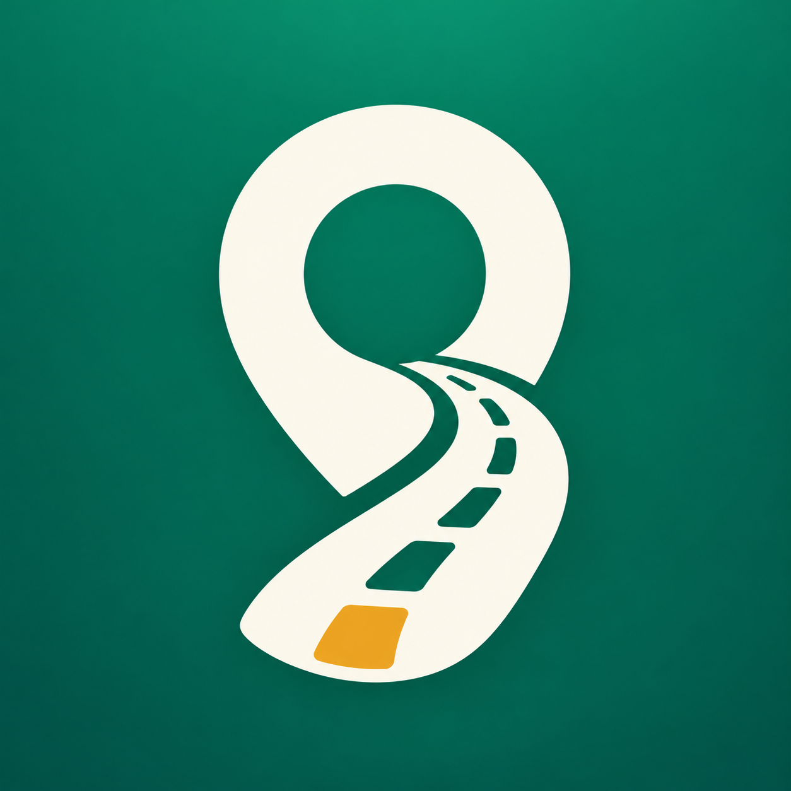

Beranda
Tab Beranda dan feed laporan warga.
beranda
91 ikon khusus untuk aplikasi warga dan web pengelola. Bentuk membulat, garis tegas, serta warna yang mengikuti logo LaporJalan.
Tombol login dengan username dan password.
masukKeluar dari akun mobile dan admin.
keluarForm registrasi warga baru.
daftar-akunInput password dan ulangi password.
passwordPeran admin, akses pengelolaan.
adminAkun instansi dan lembaga penanganan jalan.
instansiDialog pengaturan peran serta wilayah kewenangan.
atur-peranIdentitas jalan dan keseluruhan infrastruktur jalan.
jalanKategori jalan_berlubang.
jalan-berlubangKategori jalan_rusak.
jalan-retakKategori trotoar_rusak.
trotoar-rusakKategori area_berbahaya dan peringatan jalan.
area-berbahayaKategori trotoar_terhalang.
trotoar-terhalangKategori jalur_pemandu_rusak untuk tunanetra.
jalur-pemanduKategori akses_kursi_roda dan aksesibilitas.
akses-kursi-rodaMemotret kerusakan langsung dengan kamera.
kameraMemilih foto dari penyimpanan perangkat.
galeriMengunggah foto laporan atau bukti perbaikan.
unggah-fotoMengganti foto laporan milik sendiri.
ganti-fotoGagal memuat foto atau file foto rusak.
foto-rusakMembuka isi lengkap laporan.
detail-laporanInput penjelasan kerusakan jalan.
deskripsiDokumentasi kondisi awal sebelum diperbaiki.
foto-sebelumDokumentasi hasil pekerjaan/perbaikan.
foto-sesudahTampilan sebelum dan sesudah perbaikan.
bandingkan-fotoAlamat dan penanda posisi laporan.
lokasiMengambil posisi saat ini dan memusatkan peta.
lokasi-sayaPetunjuk arah ke lokasi laporan.
ruteBatas wilayah dan filter cakupan instansi.
wilayahPemilihan cakupan provinsi atau nasional.
provinsiPemilihan kabupaten atau kota.
kotaPemilihan kecamatan dan pembagian wilayah.
kecamatanPemilihan desa atau kelurahan.
desaPeringatan saat mendekati laporan kerusakan.
sekitar-sayaStatus laporan menunggu peninjauan.
status-menungguLaporan telah diverifikasi.
status-diverifikasiLaporan sedang dalam penanganan.
status-diprosesPerbaikan sudah selesai.
status-selesaiLaporan tidak diterima.
status-ditolakSkor prioritas di bawah 50.
prioritas-rendahSkor prioritas 50–79.
prioritas-sedangSkor prioritas 80 atau lebih.
prioritas-tinggiTombol suka pada laporan.
sukaKeadaan tombol suka yang aktif.
sudah-disukaiDaftar dan jumlah komentar.
komentarMengirim komentar atau laporan.
kirimValidasi warga bahwa kerusakan masih ada.
validasi-masih-rusakValidasi warga bahwa kondisi sudah baik.
validasi-sudah-baikCatatan perkembangan dan riwayat status.
linimasaCatatan dan balasan dari petugas.
tanggapan-adminPetugas menambah catatan atau foto hasil pekerjaan.
tambah-perkembanganPencarian judul, alamat, wilayah, dan username.
cariFilter status, wilayah, atau jenis kerusakan.
filterUrut prioritas dan laporan terbaru.
urutkanMemperbarui daftar dan mencoba kembali.
muat-ulangMengedit laporan atau pengaturan.
editMenyimpan status dan perubahan data.
simpanMenghapus laporan atau komentar.
hapusMenutup drawer, dialog, atau banner.
tutupMenambahkan item baru.
tambahKembali ke halaman sebelumnya.
kembaliDropdown untuk status, wilayah dan kategori.
panah-bawahMenu tindakan tambahan.
opsi-lainPemberitahuan dan peringatan sekitar.
notifikasiPeringatan sekitar dinonaktifkan.
notifikasi-nonaktifJalan dengan lalu lintas rendah.
lalu-lintas-rendahJalan dengan lalu lintas sedang.
lalu-lintas-sedangJalan dengan lalu lintas tinggi.
lalu-lintas-tinggiTingkat bahaya satu / ringan.
bahaya-ringanTingkat bahaya dua / sedang.
bahaya-sedangTingkat bahaya tiga / berat.
bahaya-beratTanggal laporan, registrasi dan perkembangan.
tanggalPenjelasan bantuan dan keterangan fitur.
informasiPanduan penggunaan atau pertanyaan umum.
bantuanUnduh berkas atau aset dari web.
unduhMembagikan tautan laporan.
bagikanTautan menuju laporan atau sumber.
tautanMembuka Maps, foto penuh atau browser.
buka-eksternalKeadaan koneksi server tersedia.
koneksiGangguan jaringan dan tombol coba lagi.
koneksi-terputusKeadaan kosong pada feed dan tabel laporan.
belum-ada-laporanInformasi gagal, izin ditolak atau bahaya.
peringatanKonfirmasi aksi berhasil dan data tersimpan.
berhasilTidak ada ikon yang cocok. Coba kata lain.